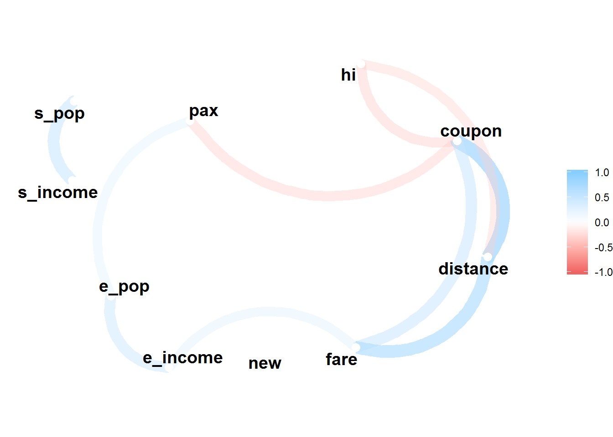

Predicting Airfares on New Routes a Supervised Learning Approach With Multiple Linear Regression
This post will talk about multiple linear regression in the context of machine learning. Linear regression is one of the simplest and most used approaches for supervised learning. This tutorial will try to help you in how to use the linear regression algorithm. I am also new to the machine learning approach, but I’m very interested in this area given the predictive ability that you can gain from this. Let’s hope I can help you. During the tutorial, we will build various multiple linear regression models. Next, we will evaluate these models, choose the more accurate one and evaluate how well the model generalizes to new data.
Throughout the post we will be using data extracted from the excellent book ‘Data Mining for Business Analytics: Concepts, Techniques, and Applications in R’. The data is called Airfares and it’s from the 90s. The data frame has several variables as you will be able to ascertain soon. The challenge related to this data frame is how the deregulation of airlines in the 70’s, and consequently the entrance of new carriers with lower prices like Southwest airlines, influence the prices of airfares. The business problem is to predict how much it will cost the airfares in a new flight route. So, imagine that you are working for an airline company that intends to open a new route in the USA and it has data related to the characteristics of airports, economic and demographic information about the cities where flights arrive and depart, flight distances and average price of air flights. The company to whom we work wants to open a new route, but doesn’t know which average price should ask for. The goal of your job in this to find a model that can better predict the average price of airfares.
Loading and Exploring our Data Frame
Now, let’s first load the packages to be used in our analysis.
library(here) # set directory
library(tidyverse) # data wrangling and visualization
library(caret) # machine learning techniques
library(corrr) # visualize correlations
library(ggcorrplot) # visualize correlations
library(lmtest) # check homoscedasticity
library(MASS) # create stepwise regression models
library(car) # analyse homoscedasticity
library(yardstick) # check regression models metrics
library(broom) # tidy statistical models
options(scipen = 999) # disable scientific notationNext , we open our dataset and start to explore it.
# open file
airfares <- read_csv(here::here("airfares.csv")) %>%
rename_all(str_to_lower) # all variables' names to lower case
# explore structure of the data frame
glimpse(airfares)## Observations: 638
## Variables: 18
## $ s_code <chr> "*", "*", "*", "ORD", "MDW", "*", "*", "*", "*", "*",...
## $ s_city <chr> "Dallas/Fort Worth TX", "Atlanta GA", "...
## $ e_code <chr> "*", "*", "*", "*", "*", "*", "*", "*", "*", "*", "*"...
## $ e_city <chr> "Amarillo TX", "Baltimore/Wash Intl MD", "...
## $ coupon <dbl> 1.00, 1.06, 1.06, 1.06, 1.06, 1.01, 1.28, 1.15, 1.33,...
## $ new <dbl> 3, 3, 3, 3, 3, 3, 3, 3, 3, 2, 3, 1, 3, 3, 3, 3, 3, 3,...
## $ vacation <chr> "No", "No", "No", "No", "No", "No", "No", "Yes", "No"...
## $ sw <chr> "Yes", "No", "No", "Yes", "Yes", "Yes", "No", "Yes", ...
## $ hi <dbl> 5291.99, 5419.16, 9185.28, 2657.35, 2657.35, 3408.11,...
## $ s_income <dbl> 28637, 26993, 30124, 29260, 29260, 26046, 28637, 2675...
## $ e_income <dbl> 21112, 29838, 29838, 29838, 29838, 29838, 29838, 2983...
## $ s_pop <dbl> 3036732, 3532657, 5787293, 7830332, 7830332, 2230955,...
## $ e_pop <dbl> 205711, 7145897, 7145897, 7145897, 7145897, 7145897, ...
## $ slot <chr> "Free", "Free", "Free", "Controlled", "Free", "Free",...
## $ gate <chr> "Free", "Free", "Free", "Free", "Free", "Free", "Free...
## $ distance <dbl> 312, 576, 364, 612, 612, 309, 1220, 921, 1249, 964, 2...
## $ pax <dbl> 7864, 8820, 6452, 25144, 25144, 13386, 4625, 5512, 78...
## $ fare <dbl> 64.11, 174.47, 207.76, 85.47, 85.47, 56.76, 228.00, 1...A glimpse() of our variables show that we have 18 variables. In the following table copied from the book ‘Data Mining for Business Analytics’, you can see a more extensive description of each variable.

Let’s further explore our dataset by using the summary() function to check our data.
# explore dataset
summary(airfares)## s_code s_city e_code
## Length:638 Length:638 Length:638
## Class :character Class :character Class :character
## Mode :character Mode :character Mode :character
##
##
##
## e_city coupon new vacation
## Length:638 Min. :1.000 Min. :0.000 Length:638
## Class :character 1st Qu.:1.040 1st Qu.:3.000 Class :character
## Mode :character Median :1.150 Median :3.000 Mode :character
## Mean :1.202 Mean :2.754
## 3rd Qu.:1.298 3rd Qu.:3.000
## Max. :1.940 Max. :3.000
## sw hi s_income e_income
## Length:638 Min. : 1230 Min. :14600 Min. :14600
## Class :character 1st Qu.: 3090 1st Qu.:24706 1st Qu.:23903
## Mode :character Median : 4208 Median :28637 Median :26409
## Mean : 4442 Mean :27760 Mean :27664
## 3rd Qu.: 5481 3rd Qu.:29694 3rd Qu.:31981
## Max. :10000 Max. :38813 Max. :38813
## s_pop e_pop slot gate
## Min. : 29838 Min. : 111745 Length:638 Length:638
## 1st Qu.:1862106 1st Qu.:1228816 Class :character Class :character
## Median :3532657 Median :2195215 Mode :character Mode :character
## Mean :4557004 Mean :3194503
## 3rd Qu.:7830332 3rd Qu.:4549784
## Max. :9056076 Max. :9056076
## distance pax fare
## Min. : 114.0 Min. : 1504 Min. : 42.47
## 1st Qu.: 455.0 1st Qu.: 5328 1st Qu.:106.29
## Median : 850.0 Median : 7792 Median :144.60
## Mean : 975.7 Mean :12782 Mean :160.88
## 3rd Qu.:1306.2 3rd Qu.:14090 3rd Qu.:209.35
## Max. :2764.0 Max. :73892 Max. :402.02Moreover, we will check if there are any missing values.
sum(is.na(airfares)) # check if there are missing values## [1] 0We don’t have any missing values.
Now we can visualize the distribution of our dependent variable named fare.
# visualize our dependent variable
ggplot(airfares, aes(fare)) +
geom_histogram(binwidth = 10)
Next, we will remove the first four variables from our data frame (s_code, s_city, e_code, and e_city).
# remove variables
airfares <- airfares %>%
dplyr::select(-c(1:4)) # remove variables 1 to 4. These correspond to variables (s_code, s_city, e_code, and e_city)
glimpse(airfares)## Observations: 638
## Variables: 14
## $ coupon <dbl> 1.00, 1.06, 1.06, 1.06, 1.06, 1.01, 1.28, 1.15, 1.33,...
## $ new <dbl> 3, 3, 3, 3, 3, 3, 3, 3, 3, 2, 3, 1, 3, 3, 3, 3, 3, 3,...
## $ vacation <chr> "No", "No", "No", "No", "No", "No", "No", "Yes", "No"...
## $ sw <chr> "Yes", "No", "No", "Yes", "Yes", "Yes", "No", "Yes", ...
## $ hi <dbl> 5291.99, 5419.16, 9185.28, 2657.35, 2657.35, 3408.11,...
## $ s_income <dbl> 28637, 26993, 30124, 29260, 29260, 26046, 28637, 2675...
## $ e_income <dbl> 21112, 29838, 29838, 29838, 29838, 29838, 29838, 2983...
## $ s_pop <dbl> 3036732, 3532657, 5787293, 7830332, 7830332, 2230955,...
## $ e_pop <dbl> 205711, 7145897, 7145897, 7145897, 7145897, 7145897, ...
## $ slot <chr> "Free", "Free", "Free", "Controlled", "Free", "Free",...
## $ gate <chr> "Free", "Free", "Free", "Free", "Free", "Free", "Free...
## $ distance <dbl> 312, 576, 364, 612, 612, 309, 1220, 921, 1249, 964, 2...
## $ pax <dbl> 7864, 8820, 6452, 25144, 25144, 13386, 4625, 5512, 78...
## $ fare <dbl> 64.11, 174.47, 207.76, 85.47, 85.47, 56.76, 228.00, 1...Now, we will keep exploring the data and check for correlations between the numeric variables of our data frame.
We will use the package ggcorrplot for this.
# check for correlations
# create correlations dataframe
cor_df <- airfares %>%
select_if(is.numeric) %>%
cor()
# visualize correlations with ggcorrplot
ggcorrplot(cor_df, hc.order = TRUE, type = "lower",
lab = TRUE)
From these correlations, we can verify that the prices of airlines have a high positive correlation with the variables coupon and distance. Note: coupon and distance are highly correlated which can be a problem due to the multicollinearity assumption of the regression.
Here with the function network_plot() from the corrr package we can see that above 0.3, only distance, coupon and e_income are correlated with the variable fare.
# network plot
cor_df %>%
network_plot(min_cor = 0.3) # check network plot of correlations above 0.3 in the positive and negative direction
Creation of Regression Models
In the following step, we will create a train and a test dataset, so that we can fit our training model and apply it to a test dataset in order to validate it and see whether it generalizes into a new data frame. We will use the createDataPartition() function from the caret package to make this partition.
# partition the data
set.seed(1234)
partition <- createDataPartition(airfares$fare, p = 0.7, list = FALSE) # 70% corresponds to the train data frame and 30% to the data frame
# create train and test dataframes
train_airfares <- airfares[partition, ]
test_airfares <- airfares[-partition, ]Let us now create our first regression model with our training set. We will name it model0.
# creation of model0
model0 <- lm(fare ~ ., data = train_airfares)
summary(model0)##
## Call:
## lm(formula = fare ~ ., data = train_airfares)
##
## Residuals:
## Min 1Q Median 3Q Max
## -100.556 -19.352 -1.793 20.303 106.427
##
## Coefficients:
## Estimate Std. Error t value Pr(>|t|)
## (Intercept) 9.9488140255 31.5652926156 0.315 0.752775
## coupon 15.0645997501 13.6701254718 1.102 0.271067
## new -4.4309062496 2.1911643532 -2.022 0.043770 *
## vacationYes -36.0936214515 4.0706698108 -8.867 < 0.0000000000000002 ***
## swYes -39.3376061587 4.2770307496 -9.197 < 0.0000000000000002 ***
## hi 0.0066408541 0.0011529652 5.760 0.00000001594 ***
## s_income 0.0013104057 0.0006152507 2.130 0.033743 *
## e_income 0.0016628700 0.0004437508 3.747 0.000203 ***
## s_pop 0.0000037053 0.0000007535 4.918 0.00000124446 ***
## e_pop 0.0000048570 0.0000008752 5.550 0.00000004978 ***
## slotFree -16.1624509148 4.4742546626 -3.612 0.000339 ***
## gateFree -24.3946178248 4.7186388124 -5.170 0.00000035795 ***
## distance 0.0682020180 0.0040489197 16.844 < 0.0000000000000002 ***
## pax -0.0009939716 0.0001674994 -5.934 0.00000000604 ***
## ---
## Signif. codes: 0 '***' 0.001 '**' 0.01 '*' 0.05 '.' 0.1 ' ' 1
##
## Residual standard error: 33.97 on 435 degrees of freedom
## Multiple R-squared: 0.8027, Adjusted R-squared: 0.7968
## F-statistic: 136.1 on 13 and 435 DF, p-value: < 0.00000000000000022We can see that all variables, but coupon and new, significantly predict the mean price of airlines flights. As mentioned before, this data has in mind the entrance of new players with low prices, as the Southwest Airlines, in the price of tickets flights. The regression shows that the presence of Southwest Airlines(SW) can decrease the mean price of fares in 39.338$.
As an example , we can check some assumptions of the regression in our model. Note: We will not do it for the models created afterwards. It’s just for you to have an idea on how to test some of the regression assumptions. First, we can check for multicollinearity, that is, if there is a high linear association between the predictor variables of our model. To check it , we can use the vif() function.
# test assumption of multicollinearity
car::vif(model0)## coupon new vacation sw hi s_income e_income s_pop
## 3.054571 1.037796 1.331906 1.520914 1.530992 1.837109 1.567817 2.049647
## e_pop slot gate distance pax
## 2.299528 1.601839 1.305077 2.691463 2.035736All values are below 5, meaning that we don’t have multicollinearity in our model.
Second, we can check if our residuals show homoscedasticity. We will use the augment() function from the broom package to get the predicted and residuals of our model. After that we will visualize how the residuals distribute themselves.
# test assumptions of heteroskedasticity
aug <- augment(model0)
# visualiza the residuals
aug %>%
ggplot(aes(x = .fitted, y = .resid)) +
geom_point() +
geom_smooth(se = FALSE) +
ggtitle("Residuals vs Fitted")## `geom_smooth()` using method = 'loess' and formula 'y ~ x'
It looks like we have heteroscedasticity. The residuals are not distributed uniformly along zero. Using the bptest() function from the lmtest package we can come to that conclusion.
lmtest::bptest(model0)##
## studentized Breusch-Pagan test
##
## data: model0
## BP = 51.155, df = 13, p-value = 0.000001886The p-value is below 0.05, so the assumption of homoscedasticity is not satisfied. This result may suggest an incomplete model, but for the purposes of this post we will not give it too much attention. Nonetheless, you should know how to check the regression assumptions.
Putting aside the assumptions of the regression, let’s go back to fit our training data. Now, we will use a stepwise regression method, in order to find a model that minimizes the error. We can use the stepAIC() function from the MASS package.
# create stepwise regression model
step_model <- stepAIC(model0, direction = "both")## Start: AIC=3179.78
## fare ~ coupon + new + vacation + sw + hi + s_income + e_income +
## s_pop + e_pop + slot + gate + distance + pax
##
## Df Sum of Sq RSS AIC
## - coupon 1 1402 503512 3179.0
## <none> 502111 3179.8
## - new 1 4720 506831 3182.0
## - s_income 1 5236 507347 3182.4
## - slot 1 15062 517173 3191.1
## - e_income 1 16209 518319 3192.0
## - s_pop 1 27913 530024 3202.1
## - gate 1 30851 532961 3204.6
## - e_pop 1 35553 537663 3208.5
## - hi 1 38294 540404 3210.8
## - pax 1 40647 542758 3212.7
## - vacation 1 90748 592859 3252.4
## - sw 1 97643 599754 3257.6
## - distance 1 327511 829622 3403.2
##
## Step: AIC=3179.03
## fare ~ new + vacation + sw + hi + s_income + e_income + s_pop +
## e_pop + slot + gate + distance + pax
##
## Df Sum of Sq RSS AIC
## <none> 503512 3179.0
## + coupon 1 1402 502111 3179.8
## - s_income 1 4829 508342 3181.3
## - new 1 4921 508433 3181.4
## - e_income 1 15884 519396 3191.0
## - slot 1 16329 519842 3191.4
## - s_pop 1 27075 530587 3200.5
## - gate 1 31081 534594 3203.9
## - e_pop 1 35944 539456 3208.0
## - hi 1 37169 540682 3209.0
## - pax 1 55269 558781 3223.8
## - vacation 1 93001 596514 3253.1
## - sw 1 101235 604748 3259.3
## - distance 1 653326 1156839 3550.5Now we can check which variables were dropped in the stepwise regression:
step_model##
## Call:
## lm(formula = fare ~ new + vacation + sw + hi + s_income + e_income +
## s_pop + e_pop + slot + gate + distance + pax, data = train_airfares)
##
## Coefficients:
## (Intercept) new vacationYes swYes hi
## 30.873320641 -4.521016297 -36.433723009 -39.832892403 0.006293746
## s_income e_income s_pop e_pop slotFree
## 0.001254125 0.001645024 0.000003637 0.000004882 -16.720450234
## gateFree distance pax
## -24.482100200 0.071206980 -0.001066315This function reflects a model that dropped the variables coupon and new. Let’s check this model and call it model1.
model1 <- lm(fare ~ vacation + sw + hi + s_income + e_income + s_pop + e_pop + slot + gate + distance + pax, data = train_airfares)
summary(model1)##
## Call:
## lm(formula = fare ~ vacation + sw + hi + s_income + e_income +
## s_pop + e_pop + slot + gate + distance + pax, data = train_airfares)
##
## Residuals:
## Min 1Q Median 3Q Max
## -99.494 -20.583 -1.079 19.404 107.004
##
## Coefficients:
## Estimate Std. Error t value Pr(>|t|)
## (Intercept) 21.0906196576 24.8650602431 0.848 0.396789
## vacationYes -36.0005783086 4.0696256253 -8.846 < 0.0000000000000002 ***
## swYes -39.7430471198 4.2700177449 -9.307 < 0.0000000000000002 ***
## hi 0.0061071890 0.0011098100 5.503 0.0000000637592 ***
## s_income 0.0012155887 0.0006152769 1.976 0.048820 *
## e_income 0.0016050610 0.0004447919 3.609 0.000344 ***
## s_pop 0.0000036527 0.0000007538 4.845 0.0000017573978 ***
## e_pop 0.0000049468 0.0000008778 5.636 0.0000000313070 ***
## slotFree -16.1206963093 4.4536261111 -3.620 0.000330 ***
## gateFree -24.2961731658 4.7358432038 -5.130 0.0000004358992 ***
## distance 0.0705369455 0.0029872119 23.613 < 0.0000000000000002 ***
## pax -0.0010711740 0.0001546931 -6.925 0.0000000000157 ***
## ---
## Signif. codes: 0 '***' 0.001 '**' 0.01 '*' 0.05 '.' 0.1 ' ' 1
##
## Residual standard error: 34.11 on 437 degrees of freedom
## Multiple R-squared: 0.8002, Adjusted R-squared: 0.7952
## F-statistic: 159.1 on 11 and 437 DF, p-value: < 0.00000000000000022All variables significantly predict the airfares.
So, we have 2 models - model0 and model1 - and now we will create two more models - model2 and model3. Afterwards, we will assess the performance metrics of each one of the 4 models.
For model2, we will remove the variables s_pop, e_pop, slot, and gate.
# create model2
model2 <- lm(fare ~ vacation + sw + hi + s_income + e_income + distance + pax, data = train_airfares)
summary(model2)##
## Call:
## lm(formula = fare ~ vacation + sw + hi + s_income + e_income +
## distance + pax, data = train_airfares)
##
## Residuals:
## Min 1Q Median 3Q Max
## -108.318 -23.866 -1.843 23.735 106.494
##
## Coefficients:
## Estimate Std. Error t value Pr(>|t|)
## (Intercept) -0.1679937 24.1969685 -0.007 0.99446
## vacationYes -49.7678724 4.1505747 -11.991 < 0.0000000000000002 ***
## swYes -53.9011515 4.4273744 -12.175 < 0.0000000000000002 ***
## hi 0.0049267 0.0011901 4.140 0.00004164 ***
## s_income 0.0015086 0.0005732 2.632 0.00878 **
## e_income 0.0022815 0.0004674 4.882 0.00000147 ***
## distance 0.0717944 0.0031951 22.470 < 0.0000000000000002 ***
## pax -0.0004592 0.0001491 -3.079 0.00220 **
## ---
## Signif. codes: 0 '***' 0.001 '**' 0.01 '*' 0.05 '.' 0.1 ' ' 1
##
## Residual standard error: 37.95 on 441 degrees of freedom
## Multiple R-squared: 0.7504, Adjusted R-squared: 0.7464
## F-statistic: 189.4 on 7 and 441 DF, p-value: < 0.00000000000000022For model3, we will keep only the variables vacation, sw, distance, and pax.
# create model3
model3 <- lm(fare ~ vacation + sw + distance + pax, data = train_airfares)
summary(model3)##
## Call:
## lm(formula = fare ~ vacation + sw + distance + pax, data = train_airfares)
##
## Residuals:
## Min 1Q Median 3Q Max
## -106.473 -25.127 -3.374 23.979 124.562
##
## Coefficients:
## Estimate Std. Error t value Pr(>|t|)
## (Intercept) 133.0357263 4.7533427 27.988 <0.0000000000000002 ***
## vacationYes -55.7762784 4.1795977 -13.345 <0.0000000000000002 ***
## swYes -64.5156905 4.2763749 -15.087 <0.0000000000000002 ***
## distance 0.0680762 0.0030424 22.376 <0.0000000000000002 ***
## pax -0.0003274 0.0001399 -2.341 0.0197 *
## ---
## Signif. codes: 0 '***' 0.001 '**' 0.01 '*' 0.05 '.' 0.1 ' ' 1
##
## Residual standard error: 39.92 on 444 degrees of freedom
## Multiple R-squared: 0.722, Adjusted R-squared: 0.7195
## F-statistic: 288.2 on 4 and 444 DF, p-value: < 0.00000000000000022Assssment of the Regression Models
So, we’ve built our models, however we haven’t assessed which one performs better. In the following assessment, we will center our attention in two key performance metrics: the root mean squared error(RMSE) and the R-squared. I will show you how to assess the models with the caret and yardstick packages.
# Assessing model Performance
# model0
lm0 <- train(fare ~ ., method = "lm", data = train_airfares,
trControl = trainControl(method = "none"))
# model1
lm1 <- train(fare ~ vacation + sw + hi + s_income + e_income +
s_pop + e_pop + slot + gate + distance + pax, method = "lm", data = train_airfares,
trControl = trainControl(method = "none"))
# model2
lm2 <- train(fare ~ vacation + sw + hi + s_income + e_income + distance + pax, method = "lm", data = train_airfares,
trControl = trainControl(method = "none"))
# model3
lm3 <- train(fare ~ vacation + sw + distance + pax, method = "lm", data = train_airfares,
trControl = trainControl(method = "none"))
# create dataframe with the 4 models
agg_data <- train_airfares %>%
mutate(regression0 = predict(lm0, train_airfares),
regression1 = predict(lm1, train_airfares),
regression2 = predict(lm2, train_airfares),
regression3 = predict(lm3, train_airfares))
# use the function metrics from the yardstick package to assess the models
# metrics model0
metrics(agg_data, truth = fare, estimate = regression0)## # A tibble: 3 x 3
## .metric .estimator .estimate
## <chr> <chr> <dbl>
## 1 rmse standard 33.4
## 2 rsq standard 0.803
## 3 mae standard 26.0# metrics model1
metrics(agg_data, truth = fare, estimate = regression1)## # A tibble: 3 x 3
## .metric .estimator .estimate
## <chr> <chr> <dbl>
## 1 rmse standard 33.7
## 2 rsq standard 0.800
## 3 mae standard 26.2# metrics model2
metrics(agg_data, truth = fare, estimate = regression2)## # A tibble: 3 x 3
## .metric .estimator .estimate
## <chr> <chr> <dbl>
## 1 rmse standard 37.6
## 2 rsq standard 0.750
## 3 mae standard 29.6# metrics model3
metrics(agg_data, truth = fare, estimate = regression3)## # A tibble: 3 x 3
## .metric .estimator .estimate
## <chr> <chr> <dbl>
## 1 rmse standard 39.7
## 2 rsq standard 0.722
## 3 mae standard 31.0Thus, the metrics of these models show that model0 and model1 are the best ones. They have a lower RMSE and a higher R-squared. Between these two, we should choose model1 as it includes less variables. Nonetheless, we are still left with 2 steps.
First step, let’s check these 4 models visually.
# visualized assessment of the models
agg_data %>%
gather(type_of_lm, output, regression0:regression3) %>%
ggplot(aes(fare, output, color = type_of_lm)) +
geom_point(size = 1.5, alpha = 0.5) +
facet_wrap(~type_of_lm) +
geom_abline(lty = 2, color = "gray50") +
geom_smooth(method = "lm")
It supports what we have said before, models 0 and 1 are the best ones. The regression line of both models is closer to the grey dashed line than the models 2 and 3.
Generalization of the Regression Models to new Data
The last step is a critical one in machine learning.
Firstly, we have created and fitted the models.
Secondly, we have assessed the models and it seems model0 and model1 are the best fit. However , we still do not know how the models compare when making predictions on new data. So, in this last step we need to check how our models work in our test data.
# generalization to new data
# create dataframe with the 4 models
tests_agg_data <- test_airfares %>%
mutate(regression0t = predict(lm0, test_airfares),
regression1t = predict(lm1, test_airfares),
regression2t = predict(lm2, test_airfares),
regression3t = predict(lm3, test_airfares))
# use the yardstick package to check metrics
# metrics model0
metrics(tests_agg_data, truth = fare, estimate = regression0t)## # A tibble: 3 x 3
## .metric .estimator .estimate
## <chr> <chr> <dbl>
## 1 rmse standard 39.6
## 2 rsq standard 0.739
## 3 mae standard 32.1# metrics model1
metrics(tests_agg_data, truth = fare, estimate = regression1t)## # A tibble: 3 x 3
## .metric .estimator .estimate
## <chr> <chr> <dbl>
## 1 rmse standard 39.2
## 2 rsq standard 0.746
## 3 mae standard 31.6# metrics model2
metrics(tests_agg_data, truth = fare, estimate = regression2t)## # A tibble: 3 x 3
## .metric .estimator .estimate
## <chr> <chr> <dbl>
## 1 rmse standard 40.6
## 2 rsq standard 0.726
## 3 mae standard 32.5# metrics model3
metrics(tests_agg_data, truth = fare, estimate = regression3t)## # A tibble: 3 x 3
## .metric .estimator .estimate
## <chr> <chr> <dbl>
## 1 rmse standard 43.6
## 2 rsq standard 0.688
## 3 mae standard 34.6We should also visualize our models.
# visualized assessment of the models
tests_agg_data %>%
gather(type_of_lm, output, regression0t:regression3t) %>%
ggplot(aes(fare, output, color = type_of_lm)) +
geom_point(size = 1.5, alpha = 0.5) +
facet_wrap(~type_of_lm) +
geom_abline(lty = 2, color = "gray50") +
geom_smooth(method = "lm")
The generalization shows that models0 and models1 still have a higher R-squared and a lower RMSE that the other models. However, we can attest that in test data the RMSE is higher and the R-squared is lower than in the train data. This means our model is slightly overfit.
Choosing the Model
In sum, we have created, assessed and evaluated our models. Now, we need to choose the model. Given the lower RMSE and higher R-squared compared to model2 and model3, as well as a lower number of variables than model0, we should choose model1 to make predictions.
Now that we have our final model, model1, let us imagine that we needed to predict the average fare on a route with these characteristics: vacation = no, sw = yes, hi = 3980, s_income = $35,000, e_income = $45,344, s_pop = 3,975,003, e_pop = 6,327,987, slot = free, gate = free, distance = 2410 miles, pax = 14200.
First, we should create a new data frame with this data.
# making predictions
new_df <- data.frame(vacation = "Yes",
sw = "Yes",
hi = 3980,
s_income = 35000,
e_income = 45344,
s_pop = 3975003,
e_pop = 6327987,
slot = "Free",
gate = "Free",
distance = 2410,
pax = 14200)Next, we should use the predict() function with two arguments: model1 and the new data frame.
predict(model1, newdata = new_df)## 1
## 245.1689Our model predicts that a route with these characteristics will have an average price of $245.169.
That’s the amazing thing with machine learning: Its predictive ability constantly persuades me to learn more and more about it. Of course we should not take it at face value. Our model has limitations and a more advanced algorithm would likely given us more predictive power.
I hope you have enjoyed this post. I’m still giving my first steps in machine learning and in case I have made any mistake please free to point it out. Thanks a lot and keep coding!